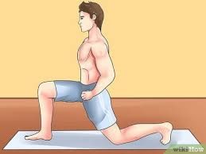

Setelah lulus SMA, saya memasuki masa perkuliahan dengan semangat baru. Awalnya, saya masih mengikuti berbagai kegiatan olahraga. Namun, saya sadar bahwa cedera ACL saya masih menjadi hambatan. Beberapa kali, saya mengalami rasa sakit pada lutut saya saat berolahraga.

Karena hal tersebut, saya memutuskan untuk lebih fokus pada aktivitas lain yang tetap bisa saya jalani tanpa terlalu membebani lutut saya. Saya mulai mendalami dunia e-sport, sebuah bidang yang tidak membutuhkan aktivitas fisik yang berat, tetapi tetap menantang dan menyenangkan.
Awalnya, saya hanya bermain game untuk mengisi waktu luang. Namun, semakin lama saya semakin serius dan mulai bergabung dengan komunitas e-sport. Saya belajar strategi, melatih keterampilan, dan bahkan mengikuti beberapa turnamen kecil. Tidak hanya itu, saya juga mulai tertarik dengan dunia streaming dan pembuatan konten.
Walaupun perjalanan saya berubah, satu hal tetap sama: saya tidak akan menyerah. Cedera ACL mungkin membatasi saya dalam satu aspek, tetapi itu tidak akan menghentikan saya untuk berkembang dalam bidang lain. Saya percaya bahwa selalu ada cara untuk terus maju, selama kita tetap berusaha dan tidak menyerah pada keadaan.
Kembali